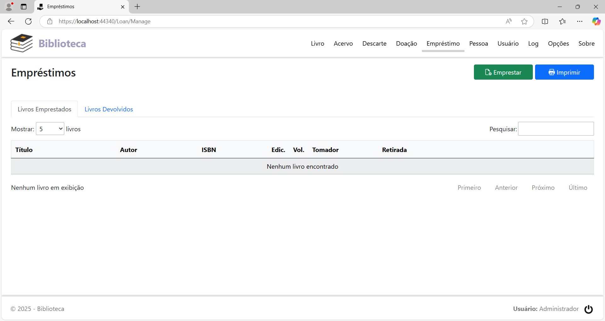
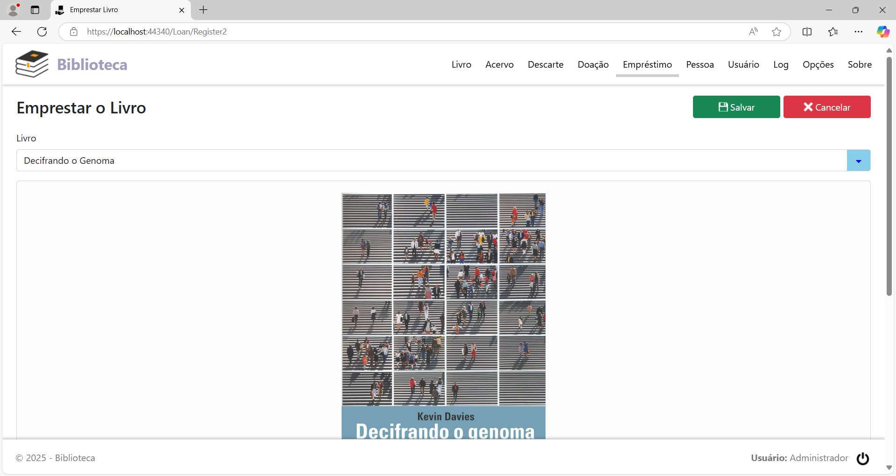
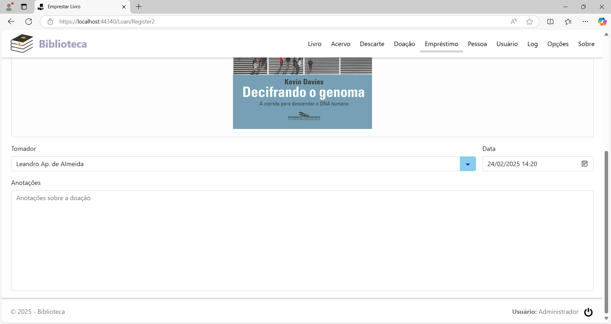
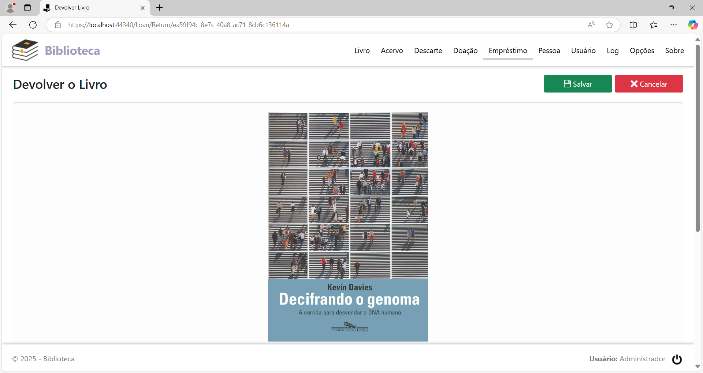
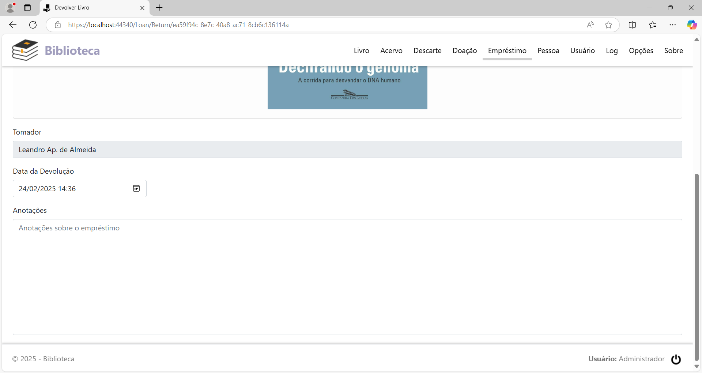
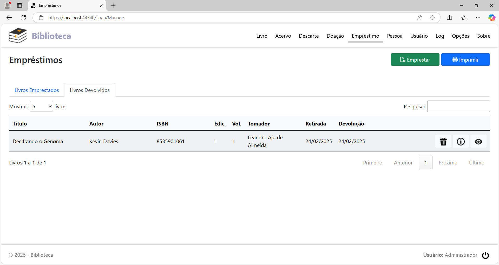
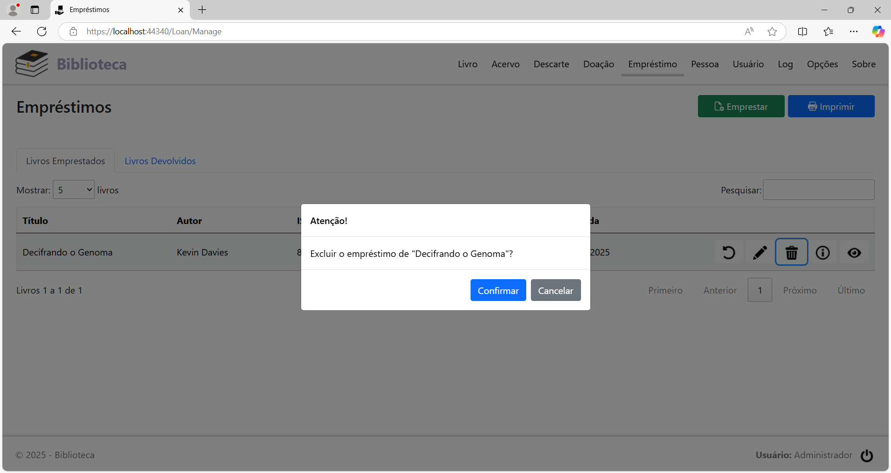
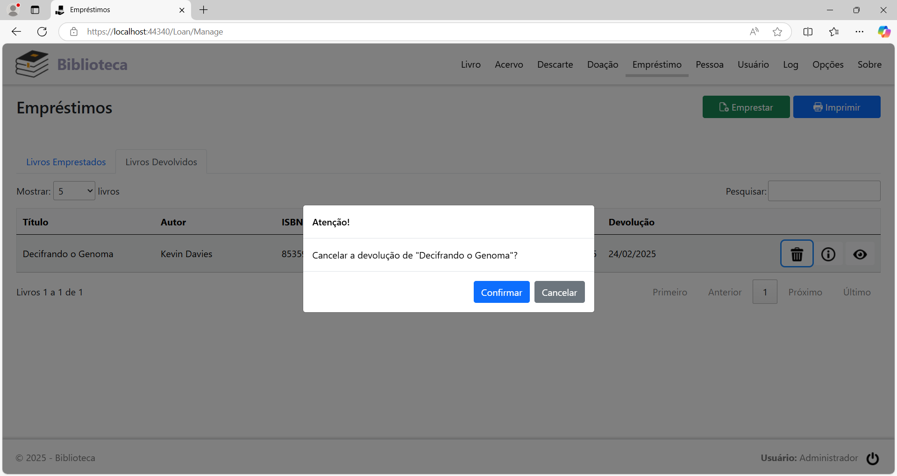
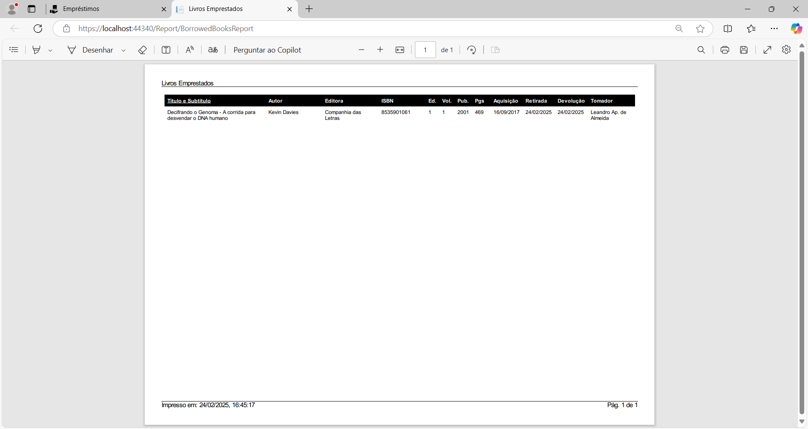

Empréstimos
Clicando na opção de menu Empréstimo, será exibida a página Empréstimos. Se não há nenhum livro emprestado, a página terá o seguinte aspecto:

Emprestar um livro
Para registrar o empréstimo de um livro, clique no botão Emprestar. Será exibida a página para empréstimo:


Preencha os campos:
Livro: Selecione o livro que foi emprestado.
Tomador: Selecione a pessoa para quem o livro foi emprestado.
Data: Data em que o livro foi emprestado.
Anotações: Anotações sobre o empréstimo do livro.
Preenchidos os campos, clique no botão Salvar.
Após o registro, a página terá este aspecto:
Na guia Livros Emprestados,
cada linha na tabela, representando um livro que está em posse de
terceiro, tem 5 botões, localizados à direita da coluna Retirada,
com as seguintes funções, nesta
ordem:
Devolver o livro emprestado: Registrar a devolução do livro pelo tomador do empréstimo.
Editar o livro emprestado: Alterar o registro de empréstimo do livro.
Excluir o livro emprestado: Excluir o registro de empréstimo do livro.
Informações do livro emprestado: Visualizar as anotações do empréstimo do livro.
Detalhes do livro emprestado: Visualizar os detalhes do livro emprestado na página Detalhes do Livro.
Devolver um livro
Localize na lista da guia Livros Emprestados o livro que foi devolvido e clique no botão Devolver o livro emprestado. Será exibida a página para registro da devolução:


Preencha os campos:
Data da Devolução: Data em que o livro foi devolvido.
Anotações: Anotações sobre o empréstimo do livro.
Preenchidos os campos, clique no botão Salvar.
Ao ser devolvido, o livro passa da lista da guia Livros Emprestados para a lista da guia Livros Devolvidos.

Alterar o registro de empréstimo de um livro
Localize na lista da guia Livros Emprestados o registro de empréstimo que será alterado e clique no botão Editar o livro emprestado. A página de edição do registro será exibida listando todos os campos do mesmo.
Altere o(s) campo(s) que está(ão) incorreto(s) e clique no botão Salvar.
Excluir o registro de empréstimo de um livro
Localize na lista da guia Livros Emprestados o registro de empréstimo que será excluído e clique no botão Excluir o livro emprestado. Será exibido o diálogo para a confirmação:

Clique no botão Confirmar para concluir.
Cancelar a devolução de um livro
Caso tenha errado ao fazer a devolução de um livro, ou por qualquer outro motivo que precise cancelar o registro de devolução, localize na lista da guia Livros Devolvidos o registro que será excluído e clique no botão Restaurar o empréstimo. Será exibido o diálogo para a confirmação:

Clique no botão Confirmar para concluir.
Geração de relatório
Para imprimir o relatório dos empréstimos realizados, clique no botão Imprimir, no cabeçalho da página.

O formato do relatório pode ser PDF ou HTML, dependendo do que foi configurado na página Opções.